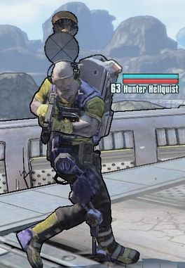

Hunter Hellquist est l'humain gérant la station radio située dans Arid Nexus - Boneyard à la solde d'Hypérion. Il est uniquement activé et rendu disponible lorsque la mission Dernières nouvelles est activée et acceptée par le joueur.
Grâce à sa station radio, il émet un programme continu de propagande en faveur d'Hypérion, dans lequel il dénigre toutes les actions du chasseur de l'Arche tout en vantant les mérites des actions du Beau Jack. Il est possible d'entendre son programme à Sanctuary à travers un ECHO dont le contenu est souvent mis à jour après la fin d'un épisode majeur de l'histoire principale.
| Hunter Hellquist | |
|---|---|
|  | |
| Vulnérable | Incendiaire |
| Lieu | Arid Nexus |
| Butin | The Bee |
| Jeu | Borderlands 2 |